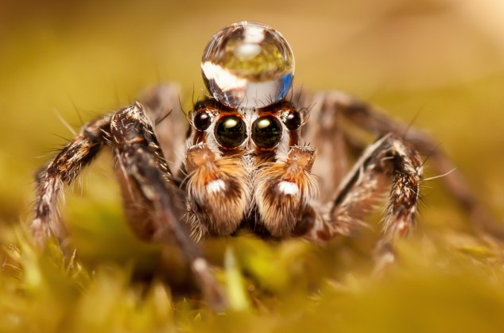

Jeremiah 10:13
When he utters his voice, there is a tumult of waters in the heavens,
and he makes the mist rise from the ends of the earth.
He makes lightning for the rain, and he brings forth the wind from his storehouses.
Assignments this week (click me!)
Student Notebook hyperlinks for Chapter 5:
p. 63 in the SNB: link.apologia.com/ECPS2N/5.1 The Water Cycle: The Oceans by USGS
p. 63 in the SNB: link.apologia.com/ECPS2N/5.2 Seawater Composition
p. 67 in the SNB: link.apologia.com/ECPS2N/5.3 Pollution of Groundwater
Required Videos and Links:
7 years of a glacier in a 1 minute video
Optional but Helpful:
Vocabulary Flashcards on Quizlet
Chapter 5 flash cards
